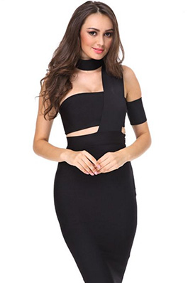

//= templates/head.html //= templates/svg.html
//= templates/top-panel.html
//= templates/search-area.html //= templates/nav-area.html
//= templates/nav-second.html
CLOTHES
Hoodies/Sweaters
Dresses
Jeans
Jumpsuits / Playsuits
Jackets / Coats
Cardigans
Sets
Skirts
Shorts
Swimwear / Beachwear
Tees / Jersey Tops
//= templates/filter.html

QUICK VIEW
Name item
$ 350
//= templates/footer.html